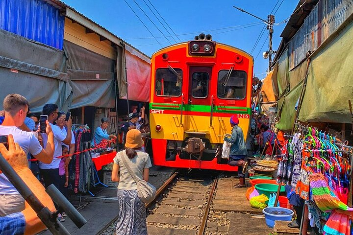

Bangkok enchants with its golden temples and vibrant street life. The city's spiritual heart beats through its ornate temples, where ancient Buddhist traditions continue to thrive amidst the modern urban landscape.
The city comes alive through its famous street food culture, bustling night markets, and floating markets. From spicy street-side pad thai to sophisticated rooftop restaurants, Bangkok's culinary scene is an adventure for the senses.
Modern Bangkok offers endless entertainment, from luxurious shopping malls to traditional Thai massage spas. The Chao Phraya River weaves through the city, offering scenic boat rides past landmarks like the Grand Palace and Wat Arun.